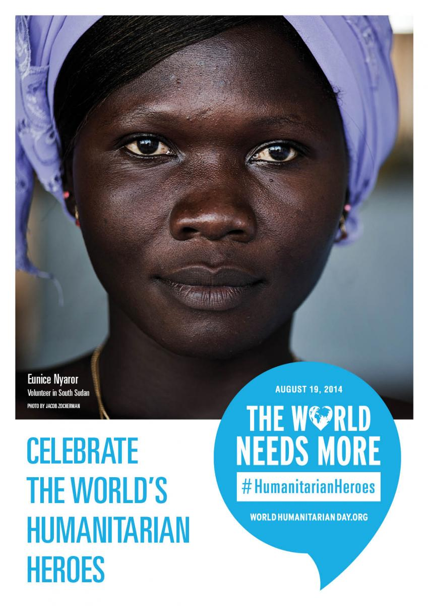

世界人道デー：脅威にさらされる人道支援要員 － 死傷者、誘拐被害が増加
【2014年8月19日】殺害や誘拐、あるいは重症を負った人道支援要員数が、これまでの記録を上回り過去最高となったことが「世界人道デー」にあたる今日、明らかになりました。2014年上半期には、パレスチナのガザ地区や南スーダンなどで人道支援要員に対する攻撃や殺害が相次ぎました。また2013年は、460名の人道支援要員が被害を受け、そのうち155名が死亡するなど、人道支援団体を標的とした暴力事件がこれまでの記録で最も多い年となりました。
「世界人道デー」は、2003年8月19日に起こったイラクの首都バグダッドでの国連事務所爆破事件を機に制定されました。この事件でセルジオ・ビエイラ・デメロ国連事務総長イラク特別代表をはじめとする22名がいのちを落としました。この「世界人道デー」は、世界各地で今まさに人道支援活動を続ける人々に捧げられる日であるとともに、職務の最中に亡くなった人々を偲び、また人道支援の精神を全世界をあげて尊ぶ日です。
ヒューマニタリアン・アウトカムズの調査によると、2013年には155名の人道支援従事者が死亡、171名が重症を負い、134名が誘拐されました。被害者総数では前年と比べ66%の増加となりました。2013年に亡くなった人道支援要員のうち81名がアフガニスタンで活動しており、同国は依然としてこうした被害が最も多い国となっています。
2014年8月13日時点の速報値によれば、今年すでに79名の人道支援要員が亡くなっています。こうした攻撃は特にこの7月と8月に急増しており、この中にはパレスチナのガザ地区および南スーダンでの被害も含まれています。
国連のヴァレリー・エイモス緊急援助調整官は、亡くなった支援要員のためにロンドンで行われた追悼式に参列し、こう述べました。「人道支援要員の一人でも失うことがあっては決してなりません。看護師、エンジニア、物流輸送の専門家、運転手など、誰もがリスクを背負い、非常に危険で困難な状況下で職務を遂行しています。「世界人道デー」は、こうした人道支援要員が払った犠牲に対して思いを寄せるための日です。私たちは同時に、最も弱い立場に置かれた人々を助け支えるため人道支援に携わる人々に敬意を表します。」
今日、「世界がもっと必要としているのはヒューマニタリアンヒーロー」をテーマに、世界各地で関連イベントが開催されます。職務中に亡くなった人道支援要員の追悼式、映画上映会、大学での討論会や美術展覧会など、こうしたイベントは多岐に渡ります。日本でも、神戸市で記念イベントが開催されます。
今年、人道支援機関とそのパートナーは、アフガニスタン、中央アフリカ共和国、ハイチ、イラク、ミャンマー、ソマリア、南スーダン、そしてシリアといった国々で活動する人道支援要員に脚光を当てます。全世界で1億800万人もの人々が人道支援を必要としており、支援組織がこうしたニーズに応えるためには171億ドルが必要です。
パレスチナ・ガザ地区にある世界保健機構(WHO)事務所長のマフムード・デーブ・ダヘルさんはこう言います。「これまでずっと人々のいのちを救うために働いてきました。看護師として集中治療が必要な患者の手助けをしてきました。現在は人道支援に携わる者として、紛争下で医療を必要としている人々を支えています。私は、父親であり、兄弟であり、息子、そして夫でもあります。私が人間であること、それが私を人道支援の道へと導きました。私たちにはもっと人を思いやる心が必要です。そして今日という日は、私が人道支援に携わる理由を再確認させてくれます。それは、人々の苦しみを和らげるためであり、人々が平和に暮らせるようにするためなのです。」
「世界人道デー」キャンペーンの一環として、世界各地で起こっている人道危機に対してアクションを呼びかけ、力を結集するための新しいプラットフォームが設立されます。この「人道メッセンジャー」サイトは、人道支援に賛同する人々のコミュニティで成り立っています。賛同者がそれぞれのソーシャルネットワークを通じて情報やストーリーを共有し、より多くの人々が行動を起こすための原動力となることを目指しています。
セーブ・ザ・チルドレンのカール・シェンブリは今年、イラク、レバノン、ヨルダン、およびパレスチナのガザ地区で働きました。「ここ数ヶ月で何千人もの子どもたちが避難を余儀なくされ、負傷し、また多くの子供たちが殺されたのです。非常に悲惨で心が痛みます。一方で、私はとても親切で寛容な人々との出会いにも恵まれてきました。あらゆる困難に直面したとき、こうした人々の他人を思いやる心に触れ、私たちは常に謙虚でなければならないと教えてくれます。彼らのおかげで私は気づいたのです。そしてこうした彼らの声を届けることが、私の仕事だと思っています。」
関連情報
- 人道支援要員に対する暴力事件は30カ国で発生していますが、そのうち3/4がアフガニスタン、シリア、南スーダン、パキスタン、スーダンの5カ国に集中しています。
- また、移動中に襲撃に遭う人道支援要員数が、その他の状況に比べ年々増加しています。2013年では、約半数の暴力的事件が待ち伏せ、或いは道端からの攻撃でした。
-
本稿で取り上げた数値や分析は、ヒューマニタリアン・アウトカムズのホームページに掲載されています。